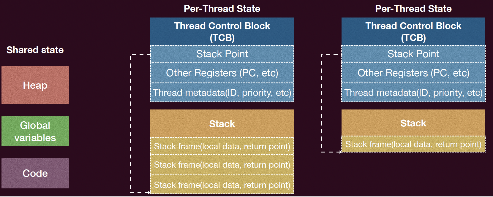
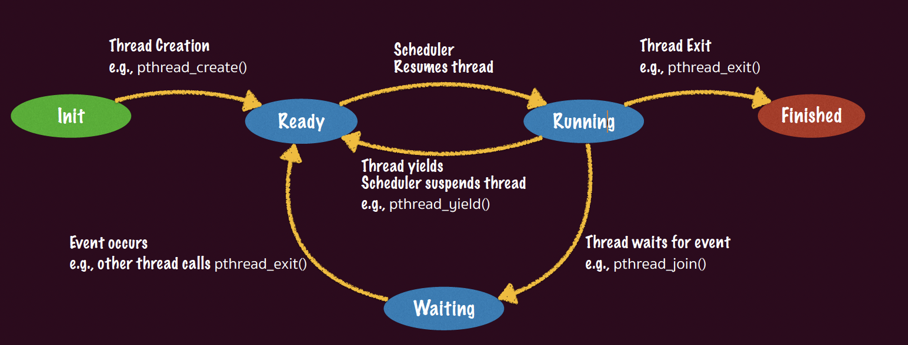

并发与多处理器编程¶
一、为什么需要多处理器编程¶
1.1 单处理器时代的终结¶
根据 摩尔定律（Moore's Law），集成电路上可容纳的晶体管数量每两年翻一番。然而自 21 世纪初起，受限于物理瓶颈（漏电流、散热等），时钟频率（Clock Frequency） 基本停滞增长，单核性能的提升进入瓶颈期。
为了持续提升算力，处理器厂商转向 多核心（Multi-core） 架构：通过堆叠更多处理器核心，依赖 并行计算（Parallel Computing） 来提升整体吞吐量。
这意味着程序员不能再依赖"硬件自动变快"的红利，而必须主动对程序进行 并行化（Parallelization）。
1.2 并行加速的上限：Amdahl 定律¶
Amdahl's Law 量化了并行化的加速上界。
定义：
- 并行加速比（Speedup）：\(\text{speedup} = \dfrac{\text{1-thread execution time}}{\text{n-thread execution time}}\)
- 设程序中可并行化部分的比例为 \(p\)，不可并行化部分（串行部分）为 \(1 - p\)
- 在 \(n\) 个并行执行流下，加速比为：
推论： 当 \(n \to \infty\) 时，加速比趋近于 \(\dfrac{1}{1-p}\)。即使拥有无限多的 CPU，程序的加速比也受限于其串行部分（Sequential Fraction） 的比例，无法无限加速。
实践意义：
- 并行化的收益会随核心数的增加而递减（边际效益递减）。
- 减小串行部分（提高 \(p\)）比单纯增加核心数更为有效。
- 并行化和同步本身的开销会进一步压低实际加速比。
1.3 并发编程的核心难点¶
并行化面临的根本困难在于：代码的并行化和同步极易出错。人类天生以线性方式思考，而并发程序的状态空间是指数级的，难以穷举。操作系统本身就是世界上最早的并发程序之一，并发是其核心组成部分。
二、线程（Thread）基础¶
2.1 线程的定义¶
线程（Thread） 是并发的基本单位，定义为：共享内存的执行流（Execution Flow with Shared Memory）。
一个进程可以包含多个线程。线程的性质：
- 独享（Per-Thread）：程序计数器（PC）、通用寄存器、栈指针（SP）及对应的 栈（Stack）（包含栈帧、局部变量、返回地址等）；
- 共享（Shared）：堆空间（Heap）、全局变量（Global Variables）、代码段（Code Segment）等进程地址空间中的其他区域。
注意：线程间栈空间的"独享"只是一种约定（Convention），操作系统层面并不强制隔离。地址空间保护（Address Space Protection）是进程间的概念，而非线程间的概念。
2.2 线程控制块（TCB）¶
每个线程在操作系统中由一个 线程控制块（Thread Control Block, TCB） 描述，其内容包括：
- 栈指针（Stack Pointer）
- 程序计数器及其他寄存器（PC, General-purpose Registers）
- 线程元数据（Thread Metadata）：线程 ID、优先级等

2.3 多线程的状态机模型¶
从形式化角度，多线程程序可建模为：多个共享内存的状态机（State Machines with Shared Memory）。
- 状态（State）：每个线程的私有状态（寄存器、栈） + 所有线程共享的内存状态
- 初始状态：所有线程创建时刻的状态
- 状态迁移：调度器（Scheduler）任意选择一个线程，执行一条指令，使系统状态发生转移
关键特性：当线程 \(T_2\) 执行一步并修改共享内存时，\(T_1\) 的可见状态也可能随之改变，而 \(T_1\) 对此毫不知情——这正是并发程序难以推理的根本原因。
三、POSIX 线程 API（Pthreads）¶
POSIX 标准提供了 <pthread.h> 库，是 Unix/Linux 系统上多线程编程的标准接口，编译时需链接 -lpthread。
| 函数 | 语义 |
|---|---|
pthread_create(thread, attr, start_routine, arg) |
创建一个新线程，以 arg 为实参运行 start_routine；attr 为线程属性（默认 NULL） |
pthread_exit(retval) |
终止当前线程，向 pthread_join 方返回 retval；若 start_routine 正常返回，效果等同 |
pthread_join(thread, retval) |
阻塞调用者，等待目标线程 thread 终止，其返回值写入 retval 指向的内存 |
pthread_yield / sched_yield() |
主动放弃当前 CPU 使用权（pthread_yield 已废弃，推荐 sched_yield） |
pthread_detach(thread) |
将线程设为分离态（Detached），使其不可被其他线程 join，主进程退出后也不被强制终止 |
例子：
3.1 线程生命周期¶
线程在其生命周期中经历以下状态转换：

- Ready（就绪）：线程 TCB 在操作系统维护的 Ready Queue 中等待调度
- Running（运行）：线程上下文（Context）被加载到 CPU 寄存器中执行
- Waiting（等待）：线程 TCB 在同步等待队列中等待特定事件（如另一线程退出）
- Finished（终止）：线程执行完毕
只有在运行阶段，其Context才会在CPU上，其余都在内核栈上，当线程处于就绪阶段时其TCB在OS维护的ready列表上等待调度，当线程处于等待阶段时，其TCB在OS维护的同步等待列表上等待同步事件发生.
四、并发的三大核心挑战（Heisenbug 的根源）¶
并发程序中存在一类难以复现的 Bug，称为 Heisenbug：这类 Bug 具有不确定性，不是每次执行都能被捕捉。其根本原因来自于以下三类性质的丧失。
4.1 原子性丧失（Loss of Atomicity）¶
原子性的定义¶
原子性（Atomicity） 是指一个操作在更高层次的抽象上不可分割，具有两个属性： - All-or-Nothing：操作要么全部完成，要么一点不做，不向外界暴露中间状态； - Isolation（隔离性）：操作访问共享变量时不会被其他操作中途干扰；其他所有对该变量的操作要么发生在此操作之前，要么在其之后。
现实中的原子性丧失¶
高级语言中的一条语句（如 sum++）在编译后往往对应多条机器指令：
单处理器多线程场景：线程在 Load/Store 之间可能被中断并切换到另一线程，违反 All-or-Nothing。
多处理器多线程场景：两个线程真正并行执行，即使使用单条指令（如 incq sum），也可能因为两个 CPU 同时访问同一内存地址而发生 数据竞争（Data Race），违反 Isolation。
这种多个线程竞争同一共享数据的现象称为 数据竞争（Data Race），是并发 Bug 的首要来源。
解决方案：互斥（Mutual Exclusion）¶
通过 锁（Lock） 实现 临界区（Critical Section） 内的原子执行：
lock/unlock保证临界区之间的绝对串行化- 程序的其他非临界区部分仍可并行执行
4.2 顺序性丧失（Loss of Order / Instruction Reordering）¶
顺序性的定义¶
顺序性（In-order Execution） 是指程序语句按照源码中书写的顺序依次执行。
编译器重排序（Compiler Reordering）¶
编译器在保证单线程语义不变的前提下，会对指令进行重排以优化性能（如减少 Cache Miss、流水线停顿等）。这在单线程下是安全的，但在多线程下会破坏程序逻辑。
典型案例 1（-O1 优化）：
sum 提升（Hoist）到寄存器，循环结束后再写回内存，等效变为：
这完全破坏了多线程下的并发语义。
典型案例 2（-O2 优化）：
控制编译器重排的手段¶
-
编译器屏障（Compiler Barrier）：
告知编译器此处可能读写任意内存，禁止跨越此屏障进行指令重排。 -
volatile关键字：标记变量的每次 Load/Store 均不可优化，强制从内存读取。
注意：上述手段是权宜之计。本课程推荐的正规解决方案是锁（Lock），其隐式包含编译器和硬件级别的屏障语义。
4.3 全局一致性丧失（Loss of Global Consistency / Memory Consistency）¶
问题来源：处理器乱序执行¶
现代处理器为了隐藏高时延操作（如 Cache Miss）的延迟，在硬件层面也会对指令进行乱序执行（Out-of-Order Execution）。不同的处理器核心可能以不同的顺序观察到对共享内存的访问，即产生内存访问顺序不一致的问题。
内存一致性模型（Memory Consistency Model） 明确定义了不同核心对共享内存操作需要遵循的可见顺序规范。
4.3.1 顺序一致性模型（Sequential Consistency, SC）¶
SC 模型提供了最强的保证： 1. 所有核心观察到的全部内存访问操作的顺序完全一致，形成一个全局顺序（Total Order）； 2. 在此全局顺序中，每个核心自己的读写操作可见顺序必须与其程序顺序（Program Order） 保持一致。
直观理解：可以看成每个"时间单位"只有一个线程能访问共享内存一次，所有操作被串行化到一条全局时间线上。
局限性： - 实现 SC 在架构设计和性能上代价极高； - 当前市面上已无支持完整 SC 的主流 CPU（Dual 386、MIPS R10000 等已被淘汰）。
4.3.2 全存储顺序模型（Total Store Ordering, TSO）¶
TSO 模型是 x86/x86-64 架构所采用的内存模型，相较于 SC 放宽了部分约束：
- 保证：对不同地址且无依赖的"读读（RR）"、"读写（RW）"、"写写（WW）"操作之间的全局可见顺序；
- 不保证："写读（Store-Load，WR）"的全局可见顺序。
机制：每个处理器核心拥有一个私有的 写缓冲区（Store Buffer / Write Buffer）。写操作先进入写缓冲区，再异步刷入共享内存。因此，一个核心能比其他核心更早看到自己的写操作，导致"写读"操作的全局可见顺序不一致。
实验验证：两线程分别执行 Store(x); Load(y) 和 Store(y); Load(x)，在 TSO 模型下可能出现两个 Load 都读到旧值（0, 0）的结果，而这在 SC 模型下是不可能发生的。
4.3.3 宽松内存模型（Relaxed Memory Model）¶
ARM 和 RISC-V 架构采用宽松内存模型，提供的保证最弱：
- 不保证任何不同地址且无依赖的访存操作之间的顺序，即 RR、RW、WR、WW 四种组合均可能乱序全局可见；
- 每个核心可以拥有独立的内存视图（Memory View），彼此之间的可见顺序完全解耦。
典型问题：生产者-消费者模式下的消息传递机制，在宽松内存模型中可能因"写写乱序"导致消费者在 flag 已被置位的情况下，读到旧的 data 值。
解决方案：手动插入硬件内存屏障（Memory Barrier / Memory Fence）：
内存一致性模型对比总结¶
| 模型 | 架构 | RR 顺序 | RW 顺序 | WW 顺序 | WR（Store-Load）顺序 |
|---|---|---|---|---|---|
| Sequential Consistency（SC） | Dual 386（已淘汰） | ✅ | ✅ | ✅ | ✅ |
| Total Store Ordering（TSO） | x86 / x86-64 | ✅ | ✅ | ✅ | ❌ |
| Relaxed Memory Model | ARM / RISC-V | ❌ | ❌ | ❌ | ❌ |
五、总结¶
| 挑战 | 根因 | 后果 | 解决方向 |
|---|---|---|---|
| 原子性丧失 | 高级语言语句对应多条指令；多核并行执行 | Data Race，计算结果错误（如 sum 值偏小） |
互斥锁（Mutex Lock），临界区保护 |
| 顺序性丧失 | 编译器指令重排优化（如寄存器提升、循环合并） | 多线程间共享变量的读写时序被破坏 | 编译器屏障（asm volatile），volatile，锁 |
| 全局一致性丧失 | 处理器乱序执行 + 写缓冲区；不同 CPU 内存视图不同 | 不同核心观察到不一致的内存访问顺序 | 硬件内存屏障（__sync_synchronize），锁（隐含屏障） |
核心结论： - 并发的基本单位是线程——共享部分内存的状态机，拥有独立的私有状态（寄存器与栈）； - POSIX 的标准多线程编程库 Pthreads 提供了创建、同步、销毁线程的完整 API； - 多处理器编程在数据竞争下，原子性、顺序性和全局一致性三者均无法自动保证； - 锁（Lock / Mutex） 是本课程解决上述三类问题的核心机制，也是后续互斥与同步内容的基础。
六、参考阅读¶
- OSTEP（Operating Systems: Three Easy Pieces） 第 25、26、27 章